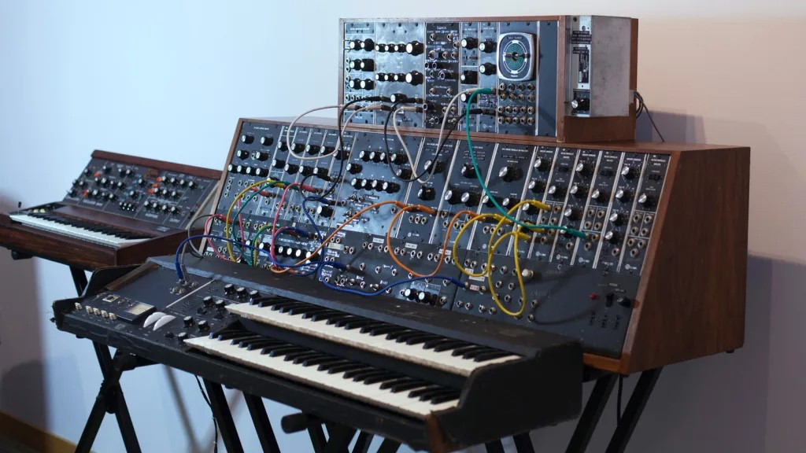
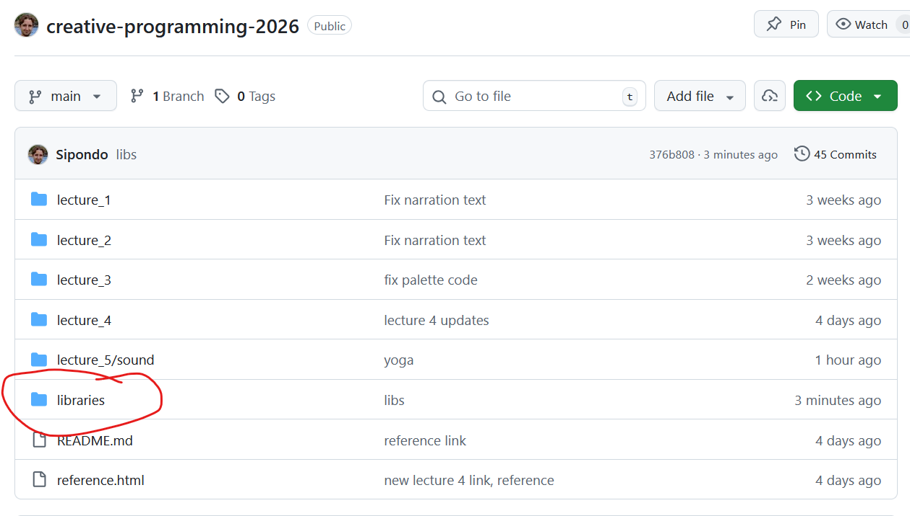
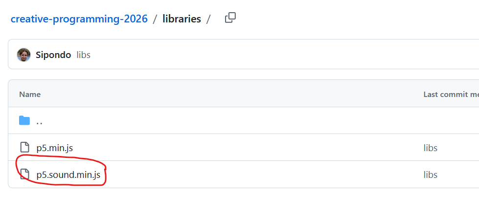
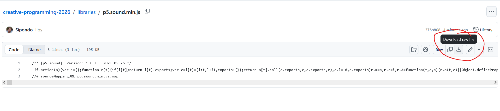
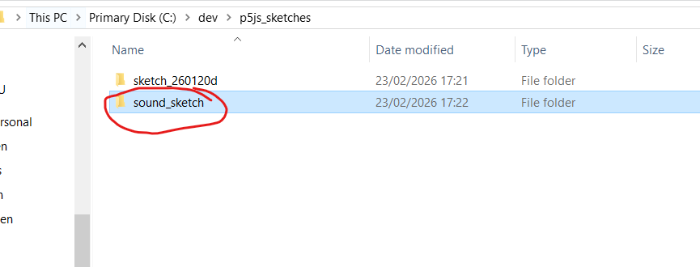
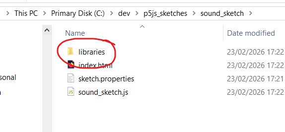
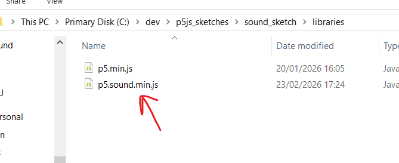
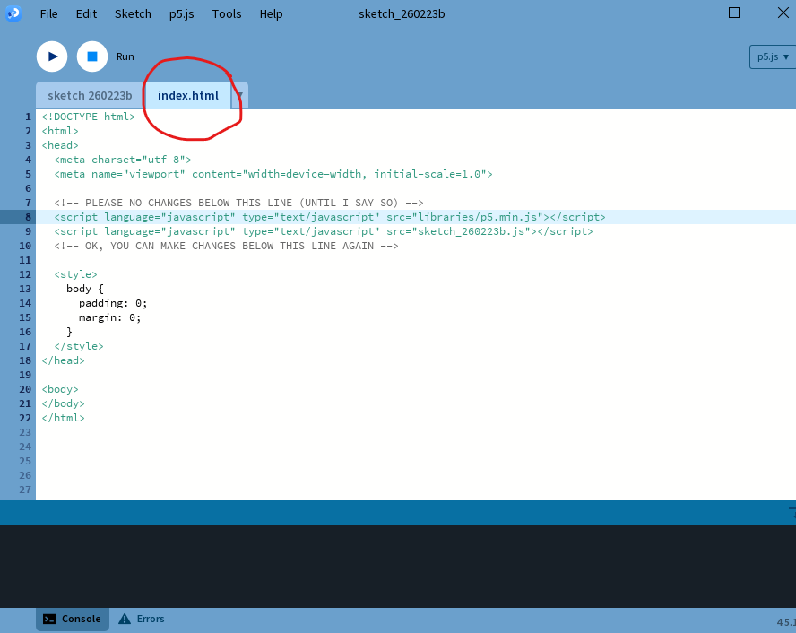
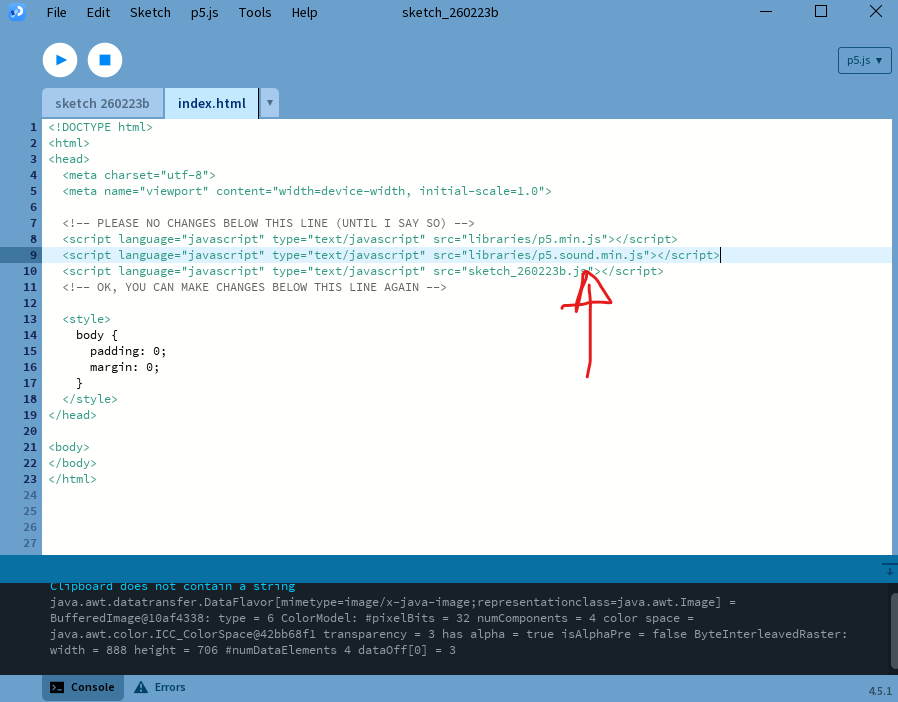
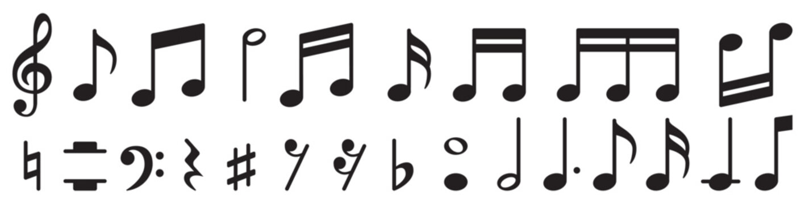

Creative Programming: Sound
Lecture 5 (24 Feb)
(Re)visiting slides?
You can jump to any slide with the menu to the (bottom) left.
Did you miss a slide or want to revisit? Open the narration tab while studying to get an explanation of difficult slides.

Milestone 1:
- We will go through the requirements for the first milestone, which is due next week
Milestone Guidance
- If you need some feedback/help for the first milestone, contact me during one of the class assignments or breaks
- As always, you can also ask and discuss with the TAs on Thursdays
Bounding Values
Constraining via if
- if statements can be used to constrain values, but they can be verbose and error-prone.
- Example: constraining a variable
constrainedXto the square.
Constraining via constrain
- p5.js provides a built-in function
constrain()that simplifies the process of constraining values. - Example: constraining a variable
constrainedXusingconstrain().
Constraining via min/max
- Another way to constrain values is by using the
min()andmax()functions. min()returns the smaller of two values, whilemax()returns the larger.- Example: constraining a variable
constrainedXusingmin()andmax().
Constraining via modulo
- The modulo operator
%can be used to wrap values around a certain range. - This is particularly useful for creating looping behavior, such as in animations or games.
- Example: wrapping a variable
moduloXto be between 0 and 220.
Constraining via mapping
- The
map()function scales and constrains values. - You map two ranges to each other, and the function will automatically scale the input value to fit within the output range.
- Example: mapping a variable
mappedXfrom 0-400 to 100-220.
Constraining in action
Class Assignment: Car
- Create a shape that moves with the arrow keys. (Tip: check the reference!)
- Use one of the constraining techniques to keep the shape within the canvas boundaries.
- Can you make it so that the shape wraps around the canvas instead of stopping at the edges?
The World of Sound
Sound in the real world
Paint with Music
Coded Instruments
The synthesizer

The p5.js synthesizer
- We can play sound in p5.js using a synthesizer
Libraries
- This code does not work by default! We need to include a library for extra functionality.
- The p5.js sound library provides various tools for working with sound.
Downloading the p5js sound library (1)

Go to the GitHub repository of the course and click on the libraries folder
Downloading the p5js sound library (2)

Open the p5.sound.min.js file
Downloading the p5js sound library (3)

Download the raw file
Putting the p5js sound library in your sketch (1)

Make your (new) sound sketch and go to its folder
Putting the p5js sound library in your sketch (2)


Go to the libraries folder in your sound sketch and put the p5.sound.min.js file there
Setting up your sketch HTML (1)

In Processing, open up the index.html file of your sketch
Setting up your sketch HTML (2)
Add the following to your index.html:

Setting up audio in your sketch
- Browser makers (Google, Mozilla, Apple, etc.) do not like it when websites play sound without the user’s consent.
- To prevent this, they require that audio can only be played in response to a user interaction (e.g. a mouse click or key press).
- We have to call the
userStartAudio()function in a user interaction event (e.g.mousePressed()) to enable audio in our sketch.
Playing a note
- We can play single notes by specifying their note name (e.g. “A4”) or their frequency in hertz (e.g. 440).
play(note, volume, delay, time)takes four arguments to specify the pitch, volume (0-1), delay before the note starts (in seconds), and duration of the note (in seconds).
Reacting to mouse position
- We can use frequencies to play notes that react to the mouse position.
Playing multiple notes
- Multiple notes can be played with
p5.PolySynth() - Check out a website for this (e.g. chords) https://www.michael-thomas.com/music/class/chords_notesinchords.htm
Synthesizing!
Class Assignment: Melody
- Set up a synthesizer in p5js and play a note when a key is pressed.
- Store a melody of notes in an array and play it back when a button is pressed instead.
- By using a polySynth, can you play a melody of chords instead of notes?

Playing sounds
Sound files
- Of course we can also play sound files instead of synthesizing sounds ourselves.
- p5.js provides a
loadSound()function to load sound files and aplay()method to play them. - You can stop, pause, and loop sounds as well using the
stop(),pause(), andloop()methods. setVolume()sets the volume of the sound, similar to how we can set the volume of a synthesizer note.
The return of preload
- Just like with images, we need to use the
preload()function to load sound files before the sketch starts. - This ensures that the sound files are available when we want to play them.
- Remember! Loading files can be done with:
- A website link (such as in the slides)
- A local file in the same directory as your sketch (e.g.
cymbal.wavif you have the file in the same folder as your sketch)
Sound example
- Let us look at an example of loading and playing sound files in p5.js.
Finding sounds
- There are many websites where you can find free sound files to use in your projects, such as:
Looping and pausing
- If you want to have a sound repeat, use
loop()instead ofplay(). - You can pause and resume the sound using
pause()andplay(). - Finally, you can stop the sound completely with
stop().
Recording
Microphone input
- Sound goes both ways! We can also capture sound using the microphone.
- In p5js, we can use the
p5.AudioIn()class to access the microphone and capture sound input. - We have to make a new
p5.AudioIn()object and call thestart()method to begin capturing sound.
S(l)ide note
- Microphone input and interactive slides are not the best of friends.
- Some of the examples may not work properly in the slideshow, but you can copy the code into your own sketch to test it out.
Volume levels
- The
getLevel()method of the audio input object returns the current volume level of the sound being captured by the microphone. - This can be used to create visualizations or interactive elements that respond to sound input.
Mapping the microphone
- The values returned by
getLevel()are typically between 0 and 1. - We can use the
map()function to scale the volume level from the microphone to a range that is suitable for our sketch.
Easing the microphone
- The microphone values are very jittery and can change rapidly, which can make it difficult to create smooth visualizations or interactions.
- Easing can get rid of the jitter and create smoother transitions between values.
Sound as vibrations
- Microphone input does not just have to be sound
- Some media (such as games) use super high volume levels to check whether users blow into the microphone
Microphone-controlled synthesizer
- We can combine the microphone input with a synthesizer to create a sound-reactive instrument.
- For example, we can use the volume level from the microphone to control the frequency or amplitude of a synthesizer note.
Sound reactive
Class Assignment: Sound Reactive
- Set up a microphone input in p5.js and use the volume level to control a visual element (e.g. the size of a circle). You can also modify an old sketch!
- Go on one of the free sound websites and find a sound file that you like. Load it into your sketch and play it when a button is pressed.
- Can you make it so that the sound file loops as long as there is sound over the microphone?

Creative Programming 2026 Lecture 5 - Ties Robroek - IT University of Copenhagen